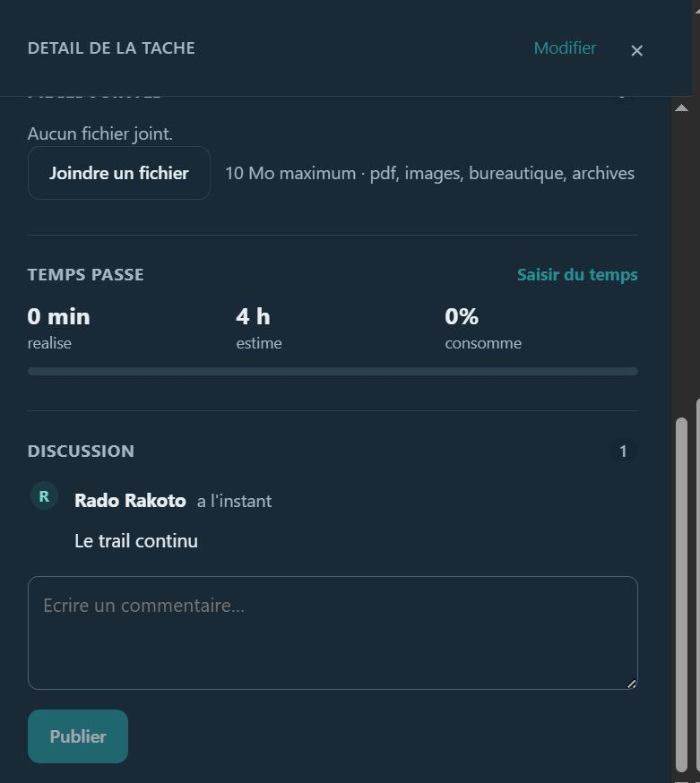
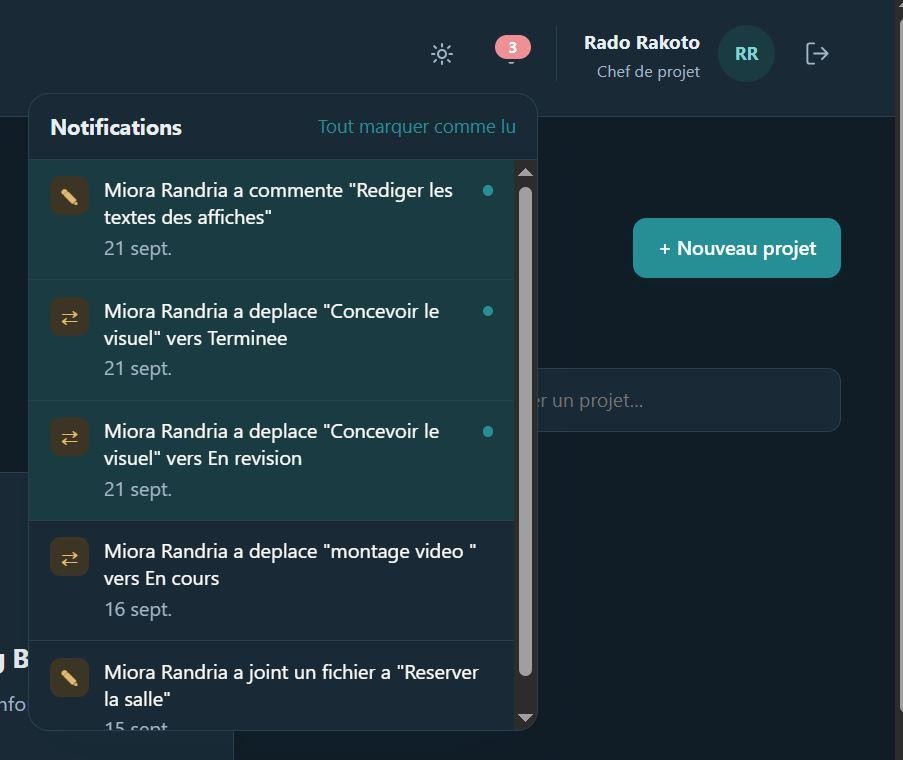

Screen 01
Kanban board
Tasks are organised into status columns and can be moved using drag and drop.
An internal web application for organising team projects and tasks, tracking progress on a Kanban board and identifying delays through a dashboard. Three roles are supported — administrator, project manager and member — with server-side permission checks on every request.
An internal web application for organising team projects and tasks, tracking progress on a Kanban board and identifying delays through a dashboard. Three roles are supported — administrator, project manager and member — with server-side permission checks on every request.
The annotated screenshots show the features and user journeys available in this project.
Each screenshot below illustrates a screen, a feature or a key step in the application.
Tasks are organised into status columns and can be moved using drag and drop.

Users enter their email and password; a JWT grants access to the workspace for their role.

One card per project, showing its status and progress bar.

Time tracking, team discussion and attachments in one place.

Task deadlines are shown in a monthly view to help anticipate delays.

Relevant team members are notified when a comment is posted, a task is moved or a file is added.